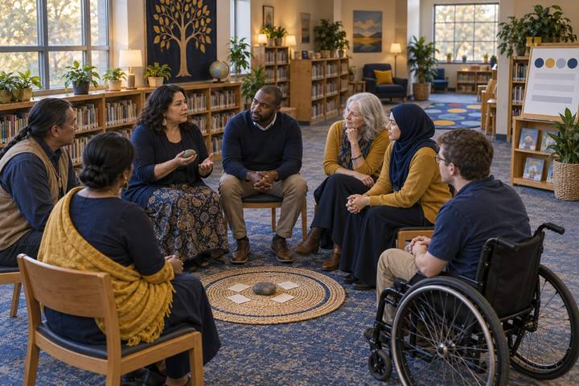

Bồi dưỡng chuyên môndành cho Giáo viên, Thủ thư
Vòng Tròn, Không Phải Màn Hình: Các Mối Quan Hệ Trong Lớp Học Kỹ Thuật Số
Giáo viên ngồi vào một vòng tròn cộng đồng thật về nhóm chat, bạn đồng hành AI và giấc ngủ, rồi lên kế hoạch cho vòng tròn của riêng mình, cùng xây dựng các thỏa thuận, và tập dượt điều cần nói khi một học sinh kể rằng có chuyện không ổn trên mạng.